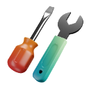

We build the systems institutions can't afford to get wrong.
Inotribe designs and engineers mission-critical software — data infrastructure, identity verification, and monitoring systems — for financial institutions, governments, and enterprises operating at scale.
- Trusted by 8 institutions
- Finance, government and enterprise
- Engineered in Accra
Accra
Our capabilities
Engineered for mission-critical delivery
4Core solution areas
8Institutional clients
12+Technologies
1National-scale deployment
Custom software development
Web and mobile applications built around how your institution actually works, not a generic template.
Data engineering & warehousing
Migrating, consolidating and structuring data so it is trustworthy and usable across your organization.

Systems integration & APIs
Turning fragmented data sources into a single, reliable access point.
Geospatial & monitoring systems
Satellite and geodata platforms for tracking activity across territory and political boundaries.
Identity verification
Real-time validation against official identity data sources.
Distributed & high-scale systems
Infrastructure built to compute and deliver reliably across millions of records.
Featured work
Real systems. Real institutions. Real scale.
A data warehouse moved from SQL Server and Microgen to PostgreSQL, with one API in front of many databases. A cross-border geospatial monitoring system. Real-time identity verification against official records.
View Case Studies// one request, many databases GET /api/accounts/ACC-0001/summary 200 OK { "served_by": "data-access-manager", "warehouse": "postgresql", "databases": ["core", "loans", "cards"], "consistent": true }


Trusted by
Institutions that build with Inotribe
- Solis Microfinance
- Liquid Financial
- GlobalPayEx
- Neebal Technologies
- Petra
- Bsystems
- Hanfie Technologies
- Government of Ghana